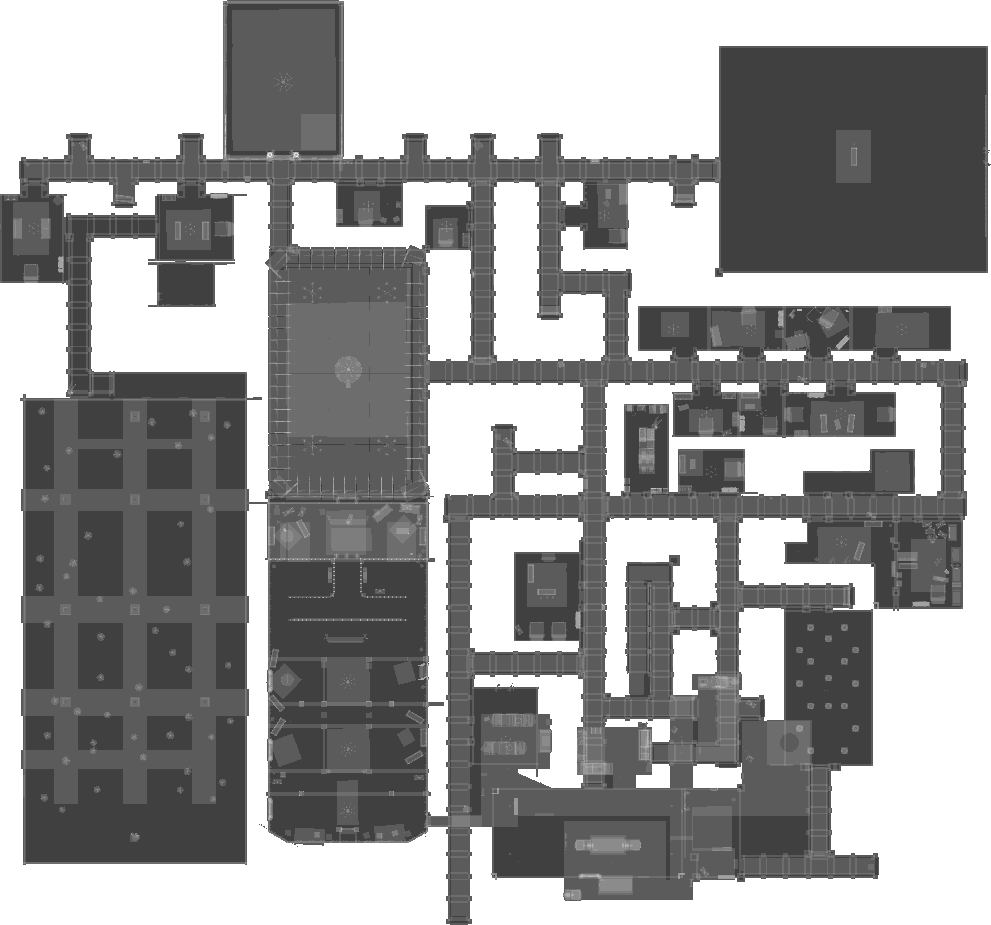

Level 6: Terror Hotel
Information
The Terror Hotel is the sixth level of the game Inside the Backrooms.
WalkThrough
-
Head to the water treatment room and look for a note. Write down the code for a padlock.
-
Starting from your current location, make your way to the painting room. In the painting room, solve the first puzzle by finding rooms with matching paintings and noting down their corresponding room numbers. Once you find all of the matching paintings and their room numbers, input the room numbers into the paintings to unlock the small box. Inside the box, you will find the Stone Face.
-
Head to the statue and place the Stone Face on it to receive the Storage Room Keys.
-
Go to the storage room and pick up the Record Disc, Weights, and Candle. Use the candle to light four separate fires scattered across the hotel.
-
To unlock the room for the last fire, go to the music room and solve the puzzle by placing the Record Disc into the record player. Wait for a while until a piano appears. Play the three notes on the piano in a random order until a text pops up. However, the quickest way of inputting all possible combinations is by playing the notes in this specific order: 123121321. By doing so, you will unlock the secret room where you can light the last fire.
-
Go to the secret room, note down the boiler temperatures on the sheet of paper and the code given by the ringing telephone.
-
Visit the Museum where you will find a collection of three fossils, and among them, one will contain a Gem inside. Because you can only pick up one at a time, pick the fossils up one by one by placing equivalent weights in their place to avoid triggering the alarm and trapping yourself. Once you have a fossil, take it to the bathroom. In order to see if there's a Gem inside, soak the fossil in the bathtub until it dissolves. If there isn't a Gem inside, go back and get another fossil. If there is a Gem remaining, pick it up.
-
Go to the gem puzzle room and hit each of the eight mirrors with light to break the statue containing the Boiler Room Keys.
-
Go back to the boiler room and repair the three pipes by placing pipes in the missing spots. While you're there, set each of the three boilers to the corresponding temperatures that were noted down. Flick the switch found in the same room as the pipes to activate the boilers, this will stun the Death Moths causing them to lose interest in you as a target.
-
Go to the bathroom and unlock the padlock using the code given by the telephone, and cross the room without touching the Death Moths.
-
Retrieve the Moth Cocoon and position it on the dining table. Signal the Receptionist by ringing the bell to approach and partake in the cocoon, which will lure the Death Moth to attack and eliminate the Receptionist. With the Receptionist deceased, you may obtain their keys and make your escape.